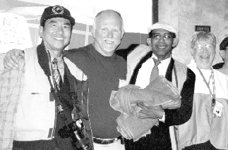

| L'amour en action |
|
|
| Une petite fille heureuse tient les affaires de première nécessité de Maître. |
Á leur arrivée, les membres de l'Association internationale de Maître Suprême Ching Hai a relevé aussitôt les régions les plus dévastées, Tarboro et Princeville. La plus vieille communauté Africaine-américaine de la nation, Princeville, était complètement submergée, et l'eau n'avait pas encore reculée. La Garde Nationale ne laissait entrer personne dans la région parce que c'était trop dangereux. Ainsi, même les officiés ne pouvaient pas commencer à chercher ceux qui manquaient.
Nous avons commencé par le Lycée de Tarboro, l'abri le plus peuplé dans l'État, où des milliers de gens vivaient temporairement. Nous avons parlé avec le représentant d'affaires publiques de la Croix Rouge Américaine locale, Mme Carolyn Danks et le directeur du personnel du Comté d'Edgecombe, M. Mitchell Stensland, qui étaient enchantés d'apprendre que nous étions venus de loin pour aider personnellement à distribuer des affaires de secours et à réconforter les victimes. Leurs propres volontaires, ainsi que les membres de l'Association internationale du Maître Suprême Ching Hai, travaillaient côte à côte pour décharger un camion énorme rempli de ravitaillements qui incluaient de l'eau, des serviettes, des couvertures, de la nourriture, etc. Nous avons distribué alors les affaires de secours aux victimes des inondations, qui, plus que n'importe qui d'autres, acceptaient l'amour de Maître dans leur coeur. Nous avions aussi apporté des jouets pour les enfants que les volontaires de la Croix Rouge étaient enchantés de voir, car ils avaient attendu une cargaison qui n'était pas encore arrivée.
|  |
| Le représentant de la Croix Rouge américaine, Mme Carolyn Danks (à droite), Volontaire de la Croix Rouge américaine (second à gauche) et l'équipe de secours du Maître Suprême Ching Hai. |
Ensuite, nous avons apporté des ravitaillements d'urgence à l'équipe de sauvetage du comté d'Edgecombe, où beaucoup de victimes étaient aussi venues pour recevoir du secours. Nous avons livré un camion de ravitaillements rempli de vêtements chauds et de conserves. Les membres de l'équipe de sauvetage étaient très reconnaissants puisque leurs ravitaillements s'épuisaient. Les membres de l'équipe de sauvetage nous a raconté des événements touchants qui étaient survenus pendant l'inondation, tel qu'un sauvetage où les gens devaient couper un toit pour l'ouvrir et 20 personnes ont rampé hors du grenier parce que le niveau d'eau était monté trop rapidement pour qu'ils puissent s'échapper de toute autre façon. Il y a eu l'histoire d'un couple et leurs deux enfants, qui avaient tout perdu et dormaient sur un plancher de ciment nus avec seulement un mince drap. Les membres de l'équipe de sauvetage s'informaient de notre organisation, disant que le Comté d'Edgecombe voulait remercier l'Association internationale du Maître Suprême Ching Hai dans son bulletin d'information. Nous avons partagé avec eux les enseignements de notre Maître comme quoi nous devons partager avec d'autres tout ce que nous possédons parce que nous sommes tous frères et soeurs dans une grande famille universelle.
Notre dernière destination était l'église baptiste d'Ebenezer. Bien que les habitants de la région près de l'église avaient été permis de revenir chez eux, ils n'avaient plus de nourriture. C'était clair pour nous que Maître nous avait envoyés pour les aider. Les gens étaient extrêmement heureux de recevoir des boîtes de conserves que nous avions apporté, leurs étagères étant pratiquement vides. Nous leur avons apporté également des vêtements et de l'eau, comme tout avait été détruit dans les inondations et que le système d'eau n'avait pas encore été rétabli. Les prêtres, diacres, et victimes nous ont accueilli chaleureusement dans leur église et leur coeur, et ils ont apprécié sincèrement l'aide généreuse du Maître Suprême Ching Hai. Le révérend Glenn Silver a dit que c'était touchant de recevoir l'amour et les soins de si loin et que c'était véritablement une bénédiction de Dieu.
L'amour de Maître Suprême Ching Hai a aidé à réchauffer les coeurs des victimes et à donner à ceux qui avaient perdu leurs logements la force de commencer à rebâtir leurs vies. C'était vraiment touchant de voir les larmes de joie dans leurs yeux et les sourires radieux sur leurs visages tandis qu'ils recevaient l'amour de Maître. Beaucoup de gens nous ont dit qu'ils se rappelleraient toujours l'amabilité et la chaleur humaine de Maître Suprême Ching Hai, une personne qui, bien qu'Elle ne les ait jamais rencontrés, les a aidés dans l'urgence. Quand nous sommes partis, c'était un beau jour ensoleillé et égayé par des sourires sur les visages de ceux qui avaient été touchés par l'amour de Maître.
Lettres de remerciements de la Croix Rouge Américaine, de l'église baptiste Ebenezer et de l'équipe de sauvetage du comté d'Edgecombe après avoir reçu les articles de premières nécessités de l'Association Internationale du Maître Suprême Ching Hai.
Dépenses pour le travail de secours en Caroline du Sud (Etats-Unis) pour aider les victimes de l'ouragan Floyd, septembre 1999 (en $US)
Description
recettes
dépenses
balance
reçus
Contribution du Maître Suprême Ching Hai
20000$
Dépenses :
Nourriture, vêtements, articles ménagers
16145,08$
A1
voiture et camion de location et essence
348,07$
A2
Billets d'avion pour cinq personnes
2425,25$
Divers
56$
TOTAL
20000$
19010,4$
989,6$